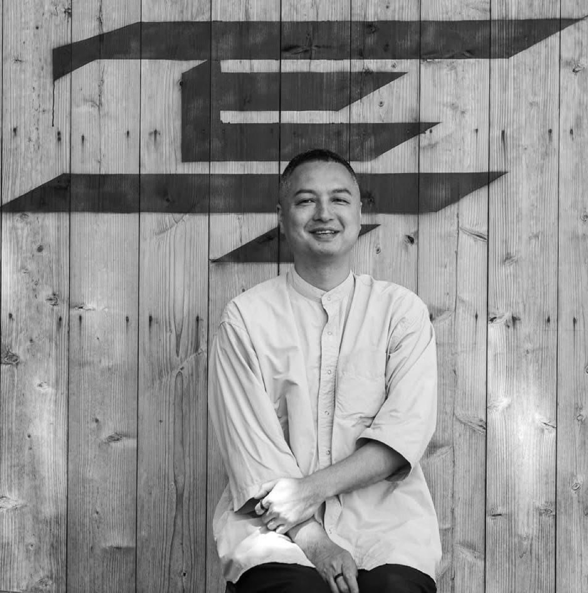
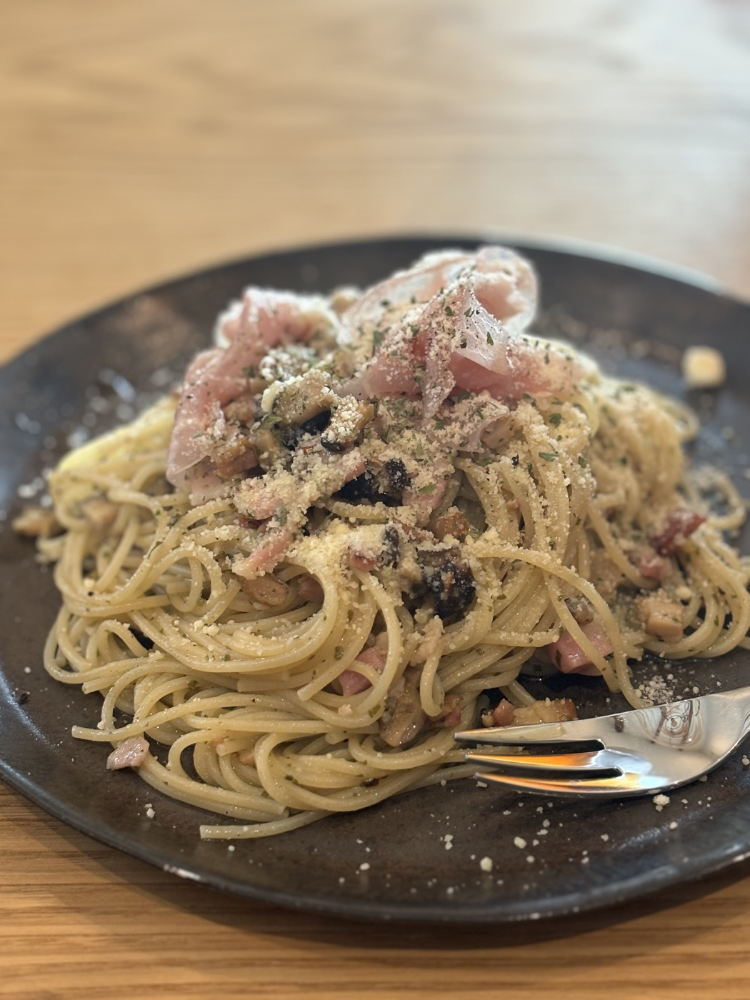

ENTRY
お申し込みはPeatixで受け付けます。
プレ開催のページが公開され次第、下記ボタンをPeatixの申込ページへ接続します。
ABOUT
資格や肩書きよりも、自分なりに調べ、試し、失敗しながら得たことを大切にします。話す人も、聞く人も、同じ食卓につくことで、学びの輪郭が少しずつ見えてきます。
目的は大きなイベント化ではありません。まちトープに人が自然に出入りする理由をつくり、地域のなかに知的な関係性を静かに増やしていくことです。
SCHEDULE


現在決定しているプレ開催
写真制作会社を営むオフィスアトム代表の宗村安人武が、実際にAIで進めている作業を見せながら話します。
実際の作業例
任せられる範囲
明日の優先順位
TAKEAWAYS
会話相手としてのAIではなく、実務を前に進める相棒としての使い方を知る。
外注すること、自分で試すこと、AIに任せることの境目を捉え直す。
自分の仕事や生活に持ち帰れる、小さな実験の入口を見つける。
ENTRY
プレ開催のページが公開され次第、下記ボタンをPeatixの申込ページへ接続します。